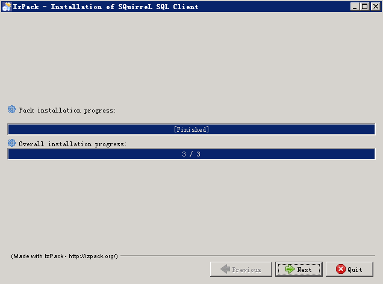
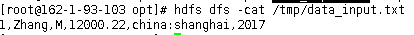
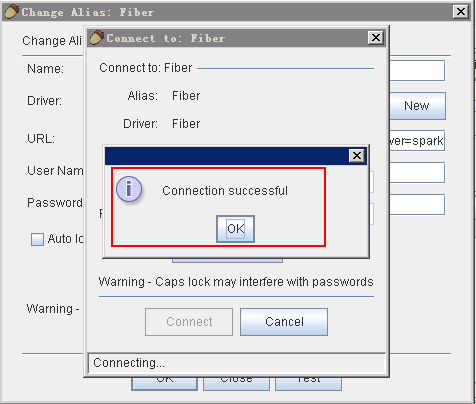

Squirrel对接FusionInsight¶
适用场景¶
Squirrel 3.7.1 <-> FusionInsight HD V100R002C60U20
Squirrel 3.8.0 <-> FusionInsight HD V100R002C70SPC200
说明¶
SQL开发工具，如DbVisualizer、DBeaver、Squirrel是数据库开发的常用选择，虽然这些工具大多不提供原生Hive、SparkSQL、Phoenix的支持，但是通过它们支持的自定义JDBC的能力，我们可以与FusionInsignt提供的Fiber组件的JDBC接口进行对接，实现这Hive、SparkSQL、Phoenix组件的统一SQL查询。
- Fiber架构图

本文介绍了Squirrel与FusionInsight的Fiber对接的操作步骤
Squirrel安装¶
-
安装jdk1.8，配置环境变量。
-
参考FusionInsight产品文档安装FusionInsight客户端，位置
/opt/hadoopclient。 -
修改
C:\Windows\System32\drivers\etc\hosts文件，加入FusionInsight集群信息。

-
在本地PC机上新建一个目录，将FusionInsight客户端下的fiber客户端文件夹Fiber拷贝至本地，例如
C:\Fiber。 -
参考FusionInsight产品文档创建用户test，并赋予足够的权限，下载test的keytab文件user.keytab，拷贝到
C:\Fiber\conf\文件夹下。 -
将FusionInsight客户端下jaas.conf文件和krb5.conf拷贝到
C:\Fiber\conf目录下，文档内容如下，principal和keytab按实际填写：Client { com.sun.security.auth.module.Krb5LoginModule required useKeyTab=true keyTab="C:\\Fiber\\conf\\user.keytab" principal="test" useTicketCache=false storeKey=true debug=true; }; -
修改fiber.xml文件配置，位置
C:\Fiber\conf\fiber.xml。
Hive的JDBC连接：
<jdbc>
<identify>hive</identify>
<describe>hive jdbc configuration</describe>
<driverClass>org.apache.hive.jdbc.HiveDriver</driverClass>
<securityClass>com.huawei.fiber.DefaultAuthenticationCallback</securityClass>
<classPath>C:\\Fiber\\Hive\\config;C:\\Fiber\\Hive\\Beeline\\lib;C:\\Fiber\\Hive\\Beeline\\conf</classPath> <jdbcUrl>jdbc:hive2://162.1.93.103:24002,162.1.93.102:24002,162.1.93.101:24002/;serviceDiscoveryMode=zooKeeper;zooKeeperNamespace=hiveserver2;sasl.qop=auth-conf;auth=KERBEROS;principal=hive/hadoop.hadoop.com@HADOOP.COM;user.principal=test;user.keytab=C:/Fiber/conf/user.keytab</jdbcUrl>
<properties>
<property>
<name>java.security.krb5.conf</name>
<value>C:\\Fiber\\conf\\krb5.conf</value>
</property>
<property>
<name>java.security.auth.login.config</name>
<value>C:\\Fiber\\conf\\jaas.conf</value>
</property>
<property>
<name>zookeeper.server.principal</name>
<value>zookeeper/hadoop.hadoop.com</value>
</property>
<property>
<name>zookeeper.kinit</name>
<value>C:\\Program Files (x86)\\Java\\jdk1.8.0_112\\jre\\bin\\kinit.exe</value>
</property>
</properties>
</jdbc>
<jdbc>
<identify>spark</identify>
<describe>spark jdbc configuration</describe>
<driverClass>org.apache.hive.jdbc.HiveDriver</driverClass>
<securityClass>com.huawei.fiber.DefaultAuthenticationCallback</securityClass>
<classPath>C:\\Fiber\\Spark\\spark\\conf;C:\\Fiber\\Spark\\spark\\lib</classPath>
<jdbcUrl>jdbc:hive2://ha-cluster/default;saslQop=auth-conf;auth=KERBEROS;principal=spark/hadoop.hadoop.com@HADOOP.COM;user.principal=test;user.keytab=C:/Fiber/conf/user.keytab</jdbcUrl>
<properties>
<property>
<name>java.security.krb5.conf</name>
<value>C:\\Fiber\\conf\\krb5.conf</value>
</property>
<property>
<name>java.security.auth.login.config</name>
<value>C:\\Fiber\\conf\\jaas.conf</value>
</property>
<property>
<name>zookeeper.server.principal</name>
<value>zookeeper/hadoop.hadoop.com</value>
</property>
<property>
<name>zookeeper.kinit</name>
<value>C:\\Program Files (x86)\\Java\\jdk1.8.0_112\\jre\\bin\\kinit.exe</value>
</property>
</properties>
</jdbc>
Phoenix的JDBC连接，需要增加属性 hbase.myclient.keytab 和 hbase.myclient.principal：
<jdbc>
<identify>phoenix</identify>
<describe>phoenix jdbc configuration</describe>
<driverClass>org.apache.phoenix.jdbc.PhoenixDriver</driverClass>
<securityClass>com.huawei.fiber.DefaultAuthenticationCallback</securityClass>
<classPath>C:\\Fiber\\HBase\\hbase\\lib;C:\\Fiber\\HBase\\hbase\\conf</classPath>
<jdbcUrl>jdbc:phoenix:162.1.93.101,162.1.93.102,162.1.93.103:24002:/hbase</jdbcUrl>
<properties>
<property>
<name>java.security.krb5.conf</name>
<value>C:\\Fiber\\conf\\krb5.conf</value>
</property>
<property>
<name>java.security.auth.login.config</name>
<value>C:\\Fiber\\conf\\jaas.conf</value>
</property>
<property>
<name>hbase.myclient.keytab</name>
<value>C:\\Fiber\\conf\\user.keytab</value>
</property>
<property>
<name>hbase.myclient.principal</name>
<value>test</value>
</property>
<property>
<name>zookeeper.server.principal</name>
<value>zookeeper/hadoop.hadoop.com</value>
</property>
<property>
<name>zookeeper.kinit</name>
<value>C:\\Program Files (x86)\\Java\\jdk1.8.0_112\\jre\\bin\\kinit.exe</value>
</property>
</properties>
</jdbc>
- 将Hive、Spark、Phoenix的JDBC配置中classPath中的文件拷贝至Fiber文件夹中。

-
下载Squirrel，地址：http://www.squirrelsql.org/#installation，选择Install jar of SQuirreL 3.7.1 for Windows/Linux/others，下载软件squirrel-sql-3.7.1-standard.jar
-
双击squirrel-sql-3.7.1-standard.jar安装


- 在这里可以选择要安装哪些环境，使用的数据库插件，语言包。




Squirrel连接Fiber¶
使用SQuirreL SQL Client通过Fiber连接FusionInsight的Hive、SparkSQL、Phoenix组件。
- 打开SQuirreL SQL Client，选择Drivers，点击 +。

- 填写Driver信息，点击 OK。
- Name：Fiber（自定义）
- Example URL：jdbc:fiber://fiberconfig=C:\Fiber\conf\fiber.xml;defaultDriver=hive
- Extra Class Path：将Fiber/lib下的jar包都添加进来
- ClassName：com.huawei.fiber.FiberDriver

- 可以看到添加完成的Driver Fiber。

对接Hive¶
- 点击 Aliases，点击 +

- 在弹出框中填写信息
- Name：Fiber（自定义）
- Driver：选择Fiber
- User Name：test
- Password：密码

- 点击 Connect

- 连接成功，点击 OK

- 点击 Connect

- 查看hive中数据表

点击 SQL面板，编辑SQL语句，点击 执行 按钮，在下方可以看到查询结果。

- Hive增加数据：
编辑数据文件data_input.txt，上传至集群的hdfs目录中，例如/tmp/下，文本内容如下：

编辑脚本，点击 执行 按钮：
load data inpath ‘/tmp/data_input.txt’ overwrite into table workers_info

查看结果：

对接SparkSQL¶
-
将defaultDriver切换为spark，点击 Test

-
点击 Connect

-
连接成功，点击 OK

-
双击Fiber，点击 Connet，将driver切换为spark

-
可以看到数据表

-
点击 SQL面板，编辑SQL语句，点击 执行 按钮，在下方可以看到查询结果。

-
Spark增加数据
编辑数据文件data_input.txt，上传至集群的hdfs目录中，例如/tmp/下，文本内容如下：

编辑脚本，点击 执行 按钮：
load data inpath ‘/tmp/data_input.txt’ overwrite into table workers_info

查看结果：

对接Phoenix¶
- 将defaultDriver切换为phoenix，点击 Test

- 点击 Connect

- 连接成功，点击 OK

- 双击 Fiber，点击 Connect，将driver切换为phoenix

- 可以看到数据phoenix表

- 点击 SQL面板 ，编辑SQL语句，点击 执行 按钮，在下方可以看到查询结果。
select * from tb_phoenix

- 点击 SQL面板，编辑SQL语句，向phoenix表中增加一条数据，点击 执行 按钮。
UPSERT INTO TB_PHOENIX(Id, Name,Company) values (108,'phoenix_user8','company8')

- 查询结果：
select * from tb_phoenix

- 点击 SQL面板，编辑SQL语句，删除一条数据，点击 执行 按钮。
delete from TB_PHOENIX where ID=109;

- 查看结果：
select * from tb_phoenix

- 点击 SQL面板，编辑SQL语句，更新一条数据，点击 执行 按钮。
UPSERT INTO TB_PHOENIX(Id, Name,Company) values (108,'phoenix_user8_up','company8_up')

- 查看结果